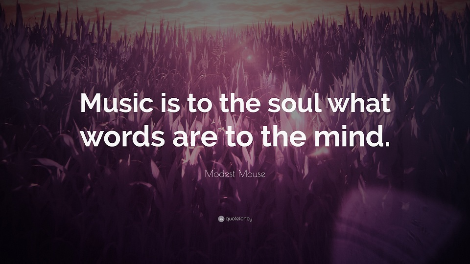
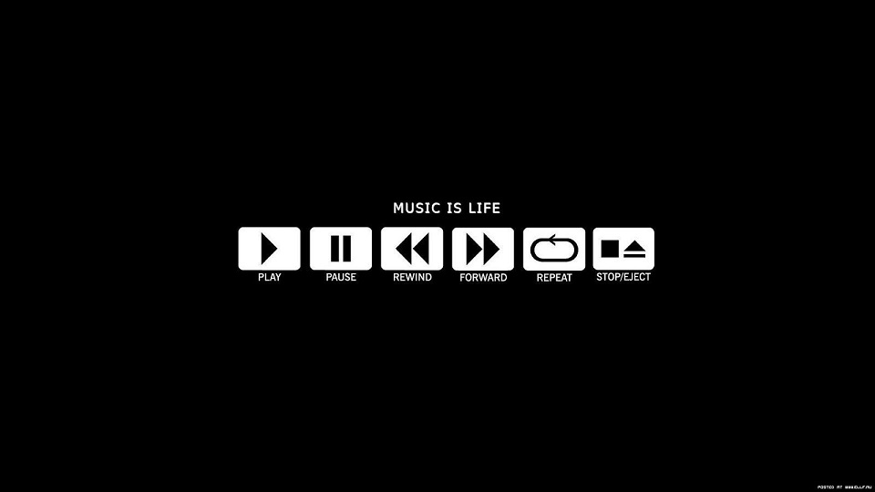

Classical music is art music produced or rooted in the traditions of Western music, including both liturgical and secular music. The term "classical music" has two meanings which includes all Western art music from the Medieval and also the specific art of Mozart and Haydn.

Rock music is a genre of popular music that originated as "rock and roll" in the United States. Rock music includes jazz, classical and other musical sources.Musically, rock has centered on the electric guitar, usually as part of a rock group with electric bass guitar and drums.

Folk music includes both traditional music and the genre that evolved from it during the 20th century folk revival. The term is often applied to music that is older than 19th Centuary. Some types of folk music are called world music as Every country has its own traditional music.
The culture of Europe is rooted in the art, architecture, music, literature, and philosophy that originated from the European cultural region. European culture is largely rooted in what is often referred to as its "common cultural heritage".It includes Euro-pop and Euro-disco.
An instrumental is a musical composition or recording without lyrics, or singing, although it might include some inarticulate vocals, such as shouted backup vocals in a Big Band setting. The music is primarily or exclusively produced by musical instruments which soothes our soul.

Gospel music is a music genre in Christian music. The significance and even the definition of gospel music varies according to culture and social context. Its main purpose is to spread the word of God and to preach the good news which saves people and lead us into Eternal Life.
Contemporary classical music can be understood as belonging to the period that started in the mid-1970s to early 1990s, which includes modernist, postmodern, neoromantic, and pluralist music. However, the term may also be employed in a broader sense to refer to all post-1945 musical forms.

Opera is an art form in which singers and musicians perform a dramatic work combining text (libretto) and musical score, usually in a theatrical setting. In traditional opera, singers do two types of singing: recitative, a speech-inflected style and arias, a more melodic style.
A carol is in modern parlance a festive song, generally religious but not necessarily connected with church worship, and often with a dance-like or popular character. Today the carol is represented almost exclusively by the Christmas carol, the Advent carol, and to a much lesser extent by the Easter carol.